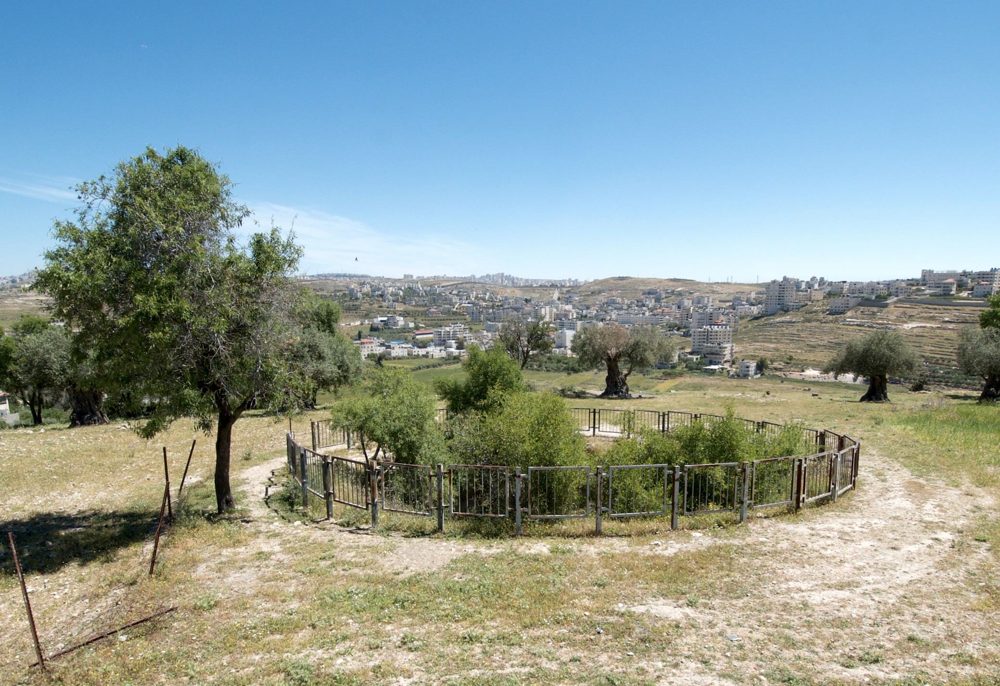

Pool of Gibeon

- Find Name
- Pool of Gibeon
- Historical Period
- Iron Age II
- Artifact Date
- Iron Age (pool in use by the 10th century BC)
- Date Discovered
- 1956–1962 (excavated)
- Discovery Location
- el-Jib (Gibeon), West Bank
- Current Location
- In situ, el-Jib
- Timeline Era
- United Monarchy
- Description
- A great cylindrical shaft with a spiral stair descending to the water table, excavated by James Pritchard at Gibeon. It is the pool beside which, in 2 Samuel 2, twelve men of Benjamin met twelve of David's men in a contest that turned into a battle, with Abner and Joab watching from opposite sides.
- Biblical Significance
- David's kingdom was not won by speeches but by swords at a waterhole. The pool gives that grim contest a place: two captains, two bands of young men, and a war between the houses of Saul and David that would bleed on until one king remained.
- Evidence Class
- Direct
- Interpretations
- Scholars broadly accept the shaft as Gibeon's pool of 2 Samuel 2; its exact construction phases are debated, but its identification with the biblical pool is widely held.
- Scripture Illuminated
- Related People
- Related Books
- Related Places
Awaiting Review Not yet checked against scholarly sources. Treat its claims as provisional until this entry is reviewed. About verification
Last reviewed: not yet reviewed